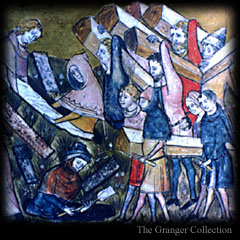

Q. Why write this guide? It has been 50 years since the Great Mortality. Although the Pestilence has returned periodically with lesser force, many younger physicians lack the knowledge that would help them provide aid in the event of another massive outbreak. To prepare for such a calamity, I have created this guide. As I was not yet educated in the art of medicine at the time the Death first appeared, I have based my information on written accounts from learned doctors and other eyewitnesses.
|